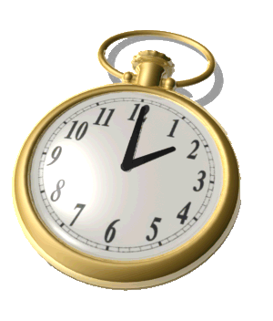
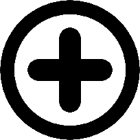
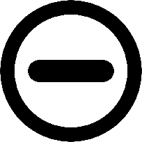
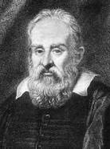
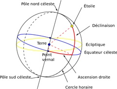

Travaux Personnels Encadrés sur le Temps
2016 - 2017
Elève
Elève
Benjamin LOISON
Elève
Sommaire:
Avant-propos
I. Le temps, régi par la nature…:
A. Qu’est-ce que le temps ?
B. Le temps gouverné par l’espace
II. … mais façonné par l’Homme:
A. Les premières notes de la mesure du temps:
B. Les unités et échelles de temps:
Les unités de temps
Les échelles de temps
C. Des avancées modernes pour une précision toujours plus grande:
Conclusion
Pour aller plus loin
Glossaire:
Jour solaire vrai
Jour sidéral
Jour solaire moyen
Temps universel
Temps atomique international
Temps universel coordonné
Seconde intercalaire
Année tropique
Fuseau horaire
Biographies:
Henri Poincaré
Galilée
Isaac Newton
Albert Einstein
Avant-propos:
Le temps est aujourd’hui, et depuis les débuts de notre civilisation, un vrai mystère. Jeunes scientifiques avides de connaissances, nous allons vous éclairer sur cette notion mal connue.
Henri Poincaré, brillant mathématicien français, affirme qu’« il n’y a pas une façon de mesurer le temps qui soit plus vraie qu’une autre ; celle qui est généralement adoptée est seulement plus commode ». A travers les siècles, c’est ce qu’ont essayé de faire tous les scientifiques : trouver la méthode la plus pratique et la plus précise pour rythmer la vie civile. Cependant, on ne peut pas développer un système de mesure du temps qui soit en total décalage avec le rythme imposé par la nature, sinon, on prendrait notre petit-déjeuner au crépuscule ou on se coucherait à midi. De ce fait, le temps est naturellement régi par la nature, plus précisément, par les planètes de notre système solaire. Les Hommes ont donc, dès l’Empire Romain, développé un système de mesure basé sur le parcours du Soleil dans le ciel. Mais il s’est avéré plus tard que la seule base du Soleil ne suffisait pas, par manque de précision. L’Homme s’est donc peu à peu détaché de l’astre du jour pour se concentrer sur le mouvement de notre planète. Malgré cela, l’observation unique depuis la Terre pouvait porter à confusion. L’Homme a donc inventé ses propres instruments afin de proposer une mesure du temps uniforme.
En quoi la mesure du temps est-elle un compromis entre l’Homme et la Nature ?
Le temps est d’abord régi par la nature avec l’espace à son origine mais des problèmes d’imprécision persistent. Il est donc façonné par l’Homme à travers un développement de son système de mesure et des instruments de plus en plus modernes et précis.
I. Le temps, régi par la nature…:
A. Qu’est-ce que le temps ?
Avant de définir ce terme, concentrons-nous sur son étymologie. Le mot "temps" vient du latin « tempus », de même racine que le grec ancien « temnein » qui signifie "couper", ce qui fait référence à la division du flot du temps en éléments finis. De plus le temps possède son dieu dans la mythologie grecque: «Chronos».
D’après le dictionnaire, « le temps est une notion humaine qui rend compte du changement dans le monde », et permettrait le renouvellement de l’instant présent. Cela signifie que le temps n’existe pas au niveau fondamental, en physique on parle de durée. Pourtant, le terme « temps » apparaît dans toutes nos conversations si bien que l’on pense savoir ce qu’il signifie. Or le temps reste encore un mystère de la physique mais certains scientifiques se sont penchés sur la question.
Galilée, le premier, a observé que la vitesse d’un corps lors d’une chute est proportionnelle à la durée de sa chute. Ainsi il introduit le lien entre le temps et la physique ce qui permet la création d’un pendule.
Isaac Newton, le deuxième, introduit officiellement la notion de durée. Il supposa ensuite que le monde est muni d’une horloge maîtresse. Selon lui, l’écoulement du temps serait défini par une flèche indiquant le futur : le temps serait régulier et immuable.
Enfin, Albert Einstein insère la théorie de la relativité : d’après lui, la masse de la Terre courbe l’espace-temps, ainsi le temps s’écoule différemment d’un référentiel d’inertie à un autre – un référentiel dans lequel le principe d’inertie est vérifié. Il n’existe donc pas de temps universel et unique. Plus simplement, le temps passe plus lentement en haute altitude qu’en basse.



Galilée
Isaac Newton
Albert Einstein
B. Le temps gouverné par l’espace
Le décompte du temps s’appuie depuis toujours sur la rotation de la Terre et sa révolution autour du Soleil. C’est ce qu’affirment les astronomes américains Edgar Woolard et Gerald Clemence en 1966 : « depuis des temps immémoriaux, les moyens utilisés universellement pour marquer le passage du temps sont les mouvements apparents des corps célestes ; et la mesure du temps, que ce soit par les heures du jour et de la nuit ou par les intervalles plus longs impliqués dans les calculs calendaires et chronologiques, dépend encore des mouvements célestes ».
Les civilisations les plus anciennes avaient compris qu’une révolution de la Terre autour du Soleil, ou année tropique, dure approximativement 365,25 jours. Dès lors, le jour fut défini de différentes manières à l’aide des planètes :
→ le jour sidéral : il s’agit de la durée que met une planète pour faire un tour sur elle-même par rapport à une étoile fixe. Il diffère du jour solaire apparent qui correspond à l’intervalle de temps entre deux passages successifs du Soleil au méridien. Cependant, le temps n’est pas régulier, donc cet intervalle de temps n’est pas fixe : il varie entre 23h 59min 39s et 24h 00min 30s. En exemple : à Paris, le 1er janvier 2012 a duré 24h 00min 28s tandis que le 1er septembre de la même année n’a duré que 23h 59min 40s.
Il y a deux raisons principales à cette non-uniformité du temps. D’une part, le mouvement apparent du Soleil dans le ciel ne décrit pas l’équateur céleste - projection de l’équateur terrestre - mais un grand cercle nommé écliptique incliné de 23°26’ en raison de l’obliquité de l’axe de rotation de la Terre par rapport au plan de son orbite.
 D’autre part, la deuxième loi de Kepler énonce que la Terre se déplace plus vite lorsqu'elle est proche du Soleil et moins vite lorsqu’elle en est éloignée.
D’autre part, la deuxième loi de Kepler énonce que la Terre se déplace plus vite lorsqu'elle est proche du Soleil et moins vite lorsqu’elle en est éloignée.
Afin de parer à ces imperfections, les scientifiques ont instauré le jour solaire moyen, basé sur le Soleil moyen. Il est défini comme un objet qui, tout au long de l’année, se déplacerait sur l’équateur à une vitesse constante tel que la durée du jour solaire moyen soit de 24h exactement.
 On peut donc à présent calculer la durée du jour sidéral, qui est aussi la durée de la rotation de la Terre par rapport au point vernal. Mais notre planète n’effectue pas un tour de 360° sur elle-même en un jour solaire par rapport au Soleil. En effet, la Terre se déplace aussi sur son orbite d’un peu moins de 1° sur ce même intervalle de temps. Ainsi, en 24h, la distance Terre-Soleil change de 1°. Afin que le Soleil revienne au méridien, la Terre doit effectuer une rotation d’environ 361°.
Par ailleurs, une année tropique comporte 365,2422 jours solaires et par rapport aux étoiles, la Terre effectue un tour de plus sur elle-même : une année tropique comporte donc 366,2422 jours sidéraux.
On a : 365,2422 / 366,2422 = 0,997 270 = 23h 56min 4,10s Ainsi, la durée du jour sidéral est de 23h 56min 4,10s.
On peut donc définir à partir de là, l’année sidérale, définie comme étant la période de temps entre deux oppositions successives d’une étoile. C’est aussi exactement le temps de la translation de la Terre autour du Soleil. On peut définir également l’année tropique, qui correspond à la période de temps entre deux passages successifs de la Terre au point vernal. Elle dure 365,25 jours environ et constitue la référence de la durée de l’année au quotidien.
II. … mais façonné par l’Homme:
A. Les premières notes de la mesure du temps:
De tous temps, les hommes ont cherché à définir le temps et son écoulement afin d’organiser ses activités commerciales, religieuses, agricoles ... Ils ont ainsi inventé plusieurs dispositifs, de plus en plus précis au fil des siècles.
Durant l’Antiquité, les Hommes remarquèrent que la longueur de leurs ombres variait au cours de la journée. Découlant de ce principe, le cadran solaire fut créé 3000 ans avant J-C. C'est avec le cadran solaire que l'on voit apparaître la division du temps telle qu'on la connait aujourd'hui. Le cadran est divisé en douze heures du lever au coucher du soleil, mais comme la durée du jour varie selon les saisons, la durée des heures varie également. L'objet produisant l'ombre est une tige métallique appelée style qui est positionnée parallèle au sol. La direction de l’ombre indique l’heure au soleil. Progressivement la graduation du cadran se perfectionne, mais elle est toujours imparfaite en raison de l’orientation verticale du style. Au XIVe siècle, les Arabes, en inclinant la tige du cadran selon la latitude du lieu en font un instrument fiable. Néanmoins, le cadran possède l’important inconvénient de n’être utilisable que de jour et par temps clair.

Environ 1000 ans avant J-C, les Hommes créèrent la clepsydre, un instrument qui mesure le temps par l’écoulement d’une certaine quantité d’eau d’un récipient dans un autre. Elle est peu fiable car la vitesse de l’écoulement varie en fonction de la température et de la pression de l’eau, et est difficile à graduer. Afin de pouvoir établir des graduations équidistantes, on a construit les clepsydres plus évasées vers le haut que vers le bas. La clepsydre est un bon complément du cadran solaire car la mesure du temps peut être effectuée indépendamment du soleil. Plus tard, on invente le sablier, qui fonctionne selon le même principe que la clepsydre mise à part que l’eau est remplacée par du sable. Il est utilisé couramment au XIV siècle, pour remplacer le cadran solaire lorsque le ciel est couvert. Son usage se répand notamment dans la marine où il sert à définir le service de bord de quatre heures, le quart. Le sablier doit être hermétique pour que le sable ne soit pas humide, ainsi il peut être utilisé à n'importe quelle température, contrairement à la clepsydre.
Une autre façon de mesurer le temps était d’allumer une bougie. La chandelle horaire, ou la bougie, dite technique « destructive », fut inventée vers 870 par un roi anglo-saxon, Alfred le Grand. Elle consistait à mesurer la vitesse à laquelle une flamme pouvait brûler une bougie. Il s’agissait d’une simple bougie graduée et conçue pour durer quatre heures. Elles sont toutefois très imprécises et très répandues dans la France médiévale. De plus, leur utilisation à usage unique constitue un problème majeur. Se servant du principe de combustion, l’horloge à huile, plus précise, est mise en place. La lampe à huile est constituée d’un boitier en étain contenant la mèche. Elle est reliée à une fiole en verre servant de réservoir. Le niveau d’huile dans la fiole indique l’heure qu’il est grâce aux graduations présentes sur la fiole en verre.
L’Homme recherche une mesure du temps précise, c’est pourquoi il va créer les horloges afin d’obtenir une mesure régie par un mécanisme réellement régulier. Les premières horloges mécaniques ont été mises au point vers le XIIIe siècle avec pour principe la chute d'un poids actionnant les rouages. En 1370 apparaît la véritable horloge mécanique, l’horloge à foliot. Une pièce, appelée foliot, permet de réguler l’énergie fournie par un poids à une roue. Le mouvement est ensuite transmis à des rouages qui entraînent le mouvement des aiguilles. La régulation est imparfaite car la dérive peut atteindre une heure par jour. En 1657, l’invention de la première horloge à pendule révolutionne l’horlogerie. Elle est le résultat des travaux de Christiaan Huygens (1629-1695), mathématicien, physicien et astronome hollandais. A partir des découvertes de Galilée (1564-1642) sur les propriétés des oscillations du pendule, il eut l’idée de remplacer le foliot par un pendule. En effet, vers 1583 il découvre l’isochronisme du pendule oscillant. A savoir que la durée des oscillations est indépendante de l’amplitude (l’angle déterminé par la position d’équilibre du pendule et l’une de ses positions extrêmes d’oscillation). Selon lui les petites oscillations du pendule sont isochrones, donc constantes et régulières en l’absence des frottements de l’air. La miniaturisation, ainsi que la précision des instruments de mesure du temps est encore améliorée grâce au spiral réglant, qui joue le rôle de balancier, mis au point par Huygens en 1675.
Le premier oscillateur à quartz est créé en 1930. Le quartz est une forme de dioxyde de silicium (SiO2) présente en grande quantité dans la nature. Le quartz résonne à une fréquence qui lui est propre et sa dureté lui permet d’avoir des fréquences de vibration élevées. Lorsqu'un courant électrique traverse le cristal, ce dernier se met à vibrer de manière régulière, de faibles charges électriques apparaissent et disparaissent à sa surface : c’est l’effet piézo-électrique. Ce mouvement crée un signal périodique sous la forme d'une déformation qui sera ensuite exploitée pour produire le mouvement des aiguilles de la montre. La précision obtenue est dix fois plus importante que le meilleur des mécanismes d’horlogerie mécanique.

Enfin, en 1947, on crée la première horloge atomique. Elle reste actuellement l’horloge la plus précise.
B. Les unités et échelles de temps:
Les unités de temps
Afin de rythmer la vie civile de la population, l’Homme a mis en place des unités de mesure.
L’unité de temps est un étalon, la matérialisation d’une grandeur donnée dont on connait la valeur avec une grande exactitude, qui exprime la mesure physique d’un temps. L’unité de référence est la seconde, et fut développée par la Conférence Internationale des Poids et Mesures.
La seconde, de symbole s, est qualitativement la soixantième partie de la minute. Le Bureau International des Mesures la définie premièrement comme la fraction 1/86400 du jour solaire moyen.
Soit 24h, la durée du jour solaire moyen. Or on sait que l’on a 3600 secondes en 1 heure, d’où : 24x3600=86400. On a donc 86400 secondes en une journée.
Son échelle de temps associée est le temps universel, TU.
Cependant la rotation de la Terre sur elle-même est irrégulière et comprend des imperfections. Ainsi la seconde fut définie, en 1956, par la fraction 1/31 556 925, 9 747 de l’année tropique 1900. Une année tropique étant la durée que met la Terre pour faire le tour du soleil. Cette nouvelle quantité est appelée la seconde des éphémérides.
→ Les éphémérides sont des tables astronomiques par lesquelles on détermine, pour chaque jour, la valeur de la position d’un corps céleste. [31 556 925, 9 747 correspond au nombre de secondes dans une année en moyenne]
Depuis la 13ème Conférence de 1967, la seconde n’est plus définie par rapport à l’année tropique mais par la propriété de la matière, dans les termes suivants:
La seconde est la durée 9 192 631 770 périodes [oscillations] de la radiation correspondant à la transition entre niveaux hyperfins de l’état fondamental de l’atome de césium 133.
Attention à la précision du langage, la seconde est la mesure d’une durée, id est un intervalle de temps. On connait aujourd’hui jusqu’à la 14ème décimale de la seconde, ce qui fait d’elle l’unité la plus précisément connue du système international SI. Son exactitude actuelle est 105 supérieure à celle des éphémérides.
Il existe également des sous-multiples de la seconde fréquemment utilisés (milli- ou microseconde) cependant les multiples de celle-ci ne le sont que très peu, car on préfère les multiples de 60 ou 24.
→ La minute, de symbole min, correspond à la durée de 60 secondes.
→ L’heure, de symbole h, est la durée de 60 minutes, ou 3 600 secondes.
→ Le jour, de symbole d (dies en latin) ou (français), équivaut à la durée de 24 heures, soit 1 440 minutes ou 86 400 secondes.
On parle aussi d’année, qui dure dans le calendrier 365 jours entiers. Or, en vérité, une année contient 365,2422 jours. En additionnant les 0,2422 jours restants, on obtient tous les quatre ans un jour de retard. Ainsi, pour rattraper ce retard, on ajoute tous les quatre ans un jour au calendrier, ce qui conduit à la mise en place d’une année bissextile de 366 jours.
Les échelles de temps
Le Greenwich Mean Time (GMT) a été utilisé jusqu’au XXème siècle. Il était établi par rapport à l’heure solaire moyenne. Ce système fut abandonné car il occasionnait un manque de précision : la variabilité de la vitesse de rotation de la Terre ainsi que l’inclinaison de son axe de rotation entraînent un décalage de l’heure solaire apparente d’environ 16 minutes.
Ainsi le GMT est remplacé par le Temps Universel Coordonné (UTC). Il est basé sur le Temps Atomique International (TAI), défini par les horloges atomiques, ainsi que le Temps Universel (TU), directement lié à la rotation de la Terre. Si la différence entre UTC et TU est supérieure à 0,9 seconde, on ajoute une seconde intercalaire.
De nos jours, le temps est toujours régi par le Temps Universel Coordonné.

C. Des avancées modernes pour une précision toujours plus grande:
Les horloges atomiques ont permis de mesurer le temps avec plus de précision.
L’idée d’utiliser des atomes pour mesurer le temps provient des recherches d’Isidor Rabi, un physicien américain. Ses recherches portaient sur les propriétés magnétiques du noyau atomique qui ont également servi à la création de la bombe atomique. En 1949 le National Institude of Standards and Technology met au point la première horloge atomique utilisant l’ammoniac. Puis en 1958 elle est remplacée par l’horloge atomique fonctionnant avec des atomes de césium.
Une horloge atomique est une horloge qui utilise la fréquence du rayonnement électromagnétique émis par un électron lors du passage d’un niveau d’énergie à un autre pour assurer l’exactitude et la stabilité du signal oscillant qu’elle produit.

Un jet d’atomes de césium 133 est émis par un four. A et B sont des états, A étant l’état le plus bas. Le jet d’atomes passe dans un champ magnétique ce qui permet de sélectionner uniquement les atomes qui sont dans l’état A. Ces atomes traversent ensuite une cavité dans laquelle un rayonnement micro-ondes dont la fréquence est ajustée, de façon à produire la transition des atomes de l’état A vers B. A la sortie de la cavité un second tri est effectué via un deuxième champ magnétique afin de sélectionner uniquement les atomes de l’état B. La proportion d’atomes à l’état B sélectionnés est d’autant plus grande que les atomes passent du temps dans la cavité. La fréquence du signal du champ micro-ondes est proche des 9 192 631 770 Hz, fréquence à laquelle les atomes de césium changent d’état.
Les horloges atomiques sont les appareils proposant la précision la plus optimale actuellement car elles ne se dérèglent presque pas (le dérèglement est estimé à une seconde en 160 millions d'années). De plus, plus de 400 horloges atomiques sont réparties sur toute la planète afin d’obtenir une mesure du temps extrêmement précise, ainsi que des horloges atomiques embarquées dans des satellites. Néanmoins, les horloges coûtent très cher.
Le temps atomique est indispensable pour le positionnement et la navigation terrestre (GPS), ainsi que la navigation spatiale. Il est également utilisé pour fournir l’heure aux ordinateurs et aux téléphones par le biais du Network Time Protocol (« protocole d'heure réseau ») ou NTP, qui est un protocole qui permet de synchroniser, via un réseau informatique, l'horloge locale d'ordinateurs sur une référence d'heure.
L’horloge atomique pourrait laisser place à l’horloge nucléaire, qui, à défaut d’utiliser des atomes, emploierait des noyaux atomiques de thorium 229. Cela permettrait une plus grande stabilité, le noyau atomique étant moins sensible aux perturbations et aux rayonnements parasites qui causent le décalage des horloges atomiques.
Conclusion:
Le temps fut étudié par de nombreux scientifiques tels que Galilée, Newton ou bien Einstein. Ils permirent au monde de mieux connaître cette notion : le temps s’appuie depuis toujours sur le mouvement des planètes, gouverné par la nature, l’espace. L’Homme n’a, dans cette situation, aucun pouvoir. La Terre, grâce à sa révolution et sa rotation, a défini un phénomène périodique : la nuit suivie du jour, lui-même suivi de la nuit… Ces alternances de lumière ont aussi amené les hommes à comprendre que l’espace gouvernait le temps sur Terre. Cependant, ces révolutions et rotation ne sont pas constantes. La vitesse de rotation est variable, la surface de la Terre n’est pas uniforme et celle-ci n’est pas droite. Des imprécisions dans la mesure du temps subsistent, ainsi l’Homme a décidé de façonner le temps à sa manière en établissant un système propre. Il instaura un système de mesure afin de parer aux imprécisions ainsi que des instruments permettant de mesurer le temps qui passe.
L’Homme reste néanmoins en accord avec la nature et l’espace dans la mesure du temps, et ce, notamment, grâce aux secondes intercalaires.
Pour aller plus loin:
Depuis quelques années, la question d’abandonner la seconde intercalaire se pose. En effet, il semblerait que son utilisation présente plus de contraintes que d’avantages : elle pose des problèmes dans la synchronisation des horloges d’ordinateurs, est irrégulière et imprévisible à long terme.
Cependant, cette seconde intercalaire sert à maintenir un lien de moins de 0,9 seconde entre le temps officiel de nos conventions humaines (Temps universel coordonnée suivant le Temps atomique) et le temps naturel de la rotation terrestre (Temps universel, non uniforme). Abandonner ces ajustements reviendrait à dire que le Temps universel coordonné cesserait d’être synchronisé avec le Temps universel. Par conséquent, cela entrainerait certes une simplification pour les télécommunications, mais notre Temps civil, suivant le Temps atomique, s’éloignerait progressivement du Temps universel, celui que nous éprouvons concrètement, dans l’alternance des nuits et des jours : le temps légal serait affranchi du mouvement des astres… Ainsi, il se pourrait que la nuit survienne en plein midi !
Lors de l’Assemblée des radiocommunications de l’ITU-R, qui s’est réunie à Genève en janvier 2012, il a été décidé de ne pas supprimer l’utilisation de la seconde intercalaire d’ici 2018. L’idée n’est cependant pas exclue et la référence astronomique dans la mesure du temps chez les hommes pourrait disparaître. Les Hommes sont-ils capables de créer leur propre système de mesure du temps sans prise en compte de la nature et indépendant de tout ?
Glossaire:
Jour solaire vrai
Le jour solaire vrai est l'intervalle entre deux passages successifs du Soleil au méridien.
Jour sidéral
Le jour sidéral est la durée que met la Terre pour faire un tour sur elle-même par rapport à une étoile fixe.
Jour solaire moyen
Le jour moyen est le jour solaire vrai corrigé des variations induites par les caractéristiques orbitales de la Terre. Il correspond au retour d’un Soleil idéal et dure ainsi 24 heures.
Temps universel
Le temps universel (UT) est l'échelle de temps fondée sur le jour solaire moyen. Auparavant appelé temps moyen de Greenwich, sa version la plus précise est nommée UT1. Le temps universel est légèrement variable à court terme, et ralenti à long terme.
Temps atomique international
Le temps atomique international est l'échelle de temps fondé sur l’écoulement des secondes du système international, calibrées par la fréquence d’un rayonnement de l’atome de césium. C’est le temps le plus régulier défini à ce jour.
Temps universel coordonné
Le temps universel coordonné est l'échelle de temps qui suit le temps atomique et qui est synchronisé avec le temps universel par l’ajout de secondes intercalaires. C’est la base du temps civil.
Seconde intercalaire
Le seconde intercalaire est la seconde ajoutée à la fin de certains mois pour maintenir l’écart entre le temps universel et le temps atomique à moins de 0,9 seconde. Elle permet ainsi de garder la cohérence du temps universel coordonné. La dernière minute du mois vaut alors 61 secondes.
Année tropique
L'année tropique est la période de temps écoulé entre deux passages successifs de la Terre au point vernal. Elle dure 365,25 jours et constitue la référence de la durée d’une année.
Fuseau horaire
Le fuseau horaire est la zone de la surface terrestre qui observe une heure uniforme en tout lieu.
Biographies:
Henri Poincaré
Né en 1854 et mort en 1912, Poincaré fut un mathématicien, physcien, philosophe et ingénieur français. Il a grandement contribué au développement de l’optique et en calcul infinitésimal. Ses contributions sur le problème des trois corps en font un fondateur de l’étude qualitative des systèmes d’équations différentielles. Il fut un précurseur majeur de la relativité restreinte d’Albert Einstein. Il figure comme un des derniers grands polymathe moderne de mathématiques.
Galilée
Né en 1564 et mort en 1642, Galilée fut un grand physicien et astronome italien. C’est en 1583 qu’il réalise sa première expérience en observant les oscillations régulières de la lampe d’un sacristain dans la cathédrale de Pise. Après plusieurs recherches, il établit la loi de la chute des corps. Il est également le premier à faire usage d’un thermomètre et développe, dans le domaine de l’astronomie, la lunette astronomique. Il observe alors la voûte céleste et introduit des nouvelles découvertes, notamment que la Terre ne voit qu’une seule face de la Lune. Il fut attaqué en justice pour avoir proposé la théorie de l’héliocentrisme et la rotation de la Terre : « et pourtant, elle tourne », dit-il.
Isaac Newton
Né en 1642 et mort en 1727, Newton fut un grand mathématicien, physicien et astronome anglais. Il fonda la mécanique classique et a grandement contribué au développement de l’optique. Il prouva que la lumière blanche était composée de plusieurs radiations colorées. Il proposa la théorie de l’attraction universelle – gravitation – et concilia dans un ouvrage, Principes mathématiques de la philosophie naturelle, le principe d’inertie ou la proportionnalité des forces.
Albert Einstein
Né en 1879 et mort en 1955, Einstein fut un physicien américain d’origine allemande. Il développa la physique quantique et se pencha sur la thermodynamique. En reprenant l’hypothèse des quanta de Planck, il introduit la notion de photon, ces grains de lumière sans masse. Il proposa également sa théorie de la relativité restreinte, introduisant l’équivalence de la masse et de l’énergie, avec la célèbre formule : E=mc².